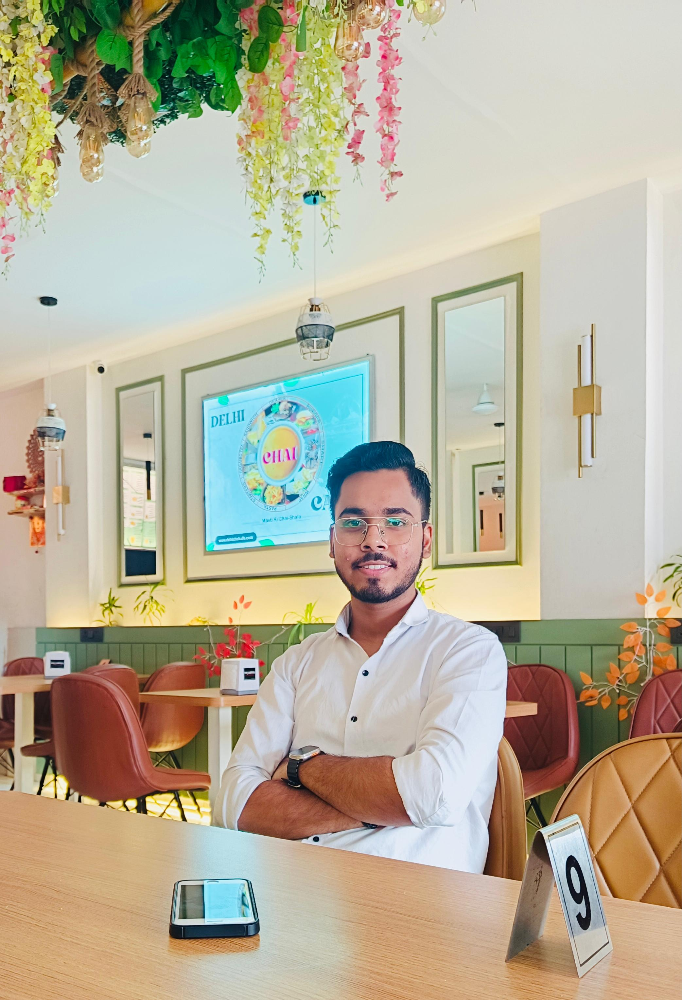

BHAVISYA PROFILE
About Me
As a UI/UX & Graphic Designer, I love creating designs that are not only beautiful but also easy for people to use. I enjoy learning about what users need and making sure my designs help them in ways they might not even realize. With experience in frontend web design, I combine technical skills with creativity to build websites that are both functional and visually appealing. The excitement of turning ideas into real, live websites keeps me motivated. It's a great feeling to see my designs reach thousands of people. Each project is a new challenge, and finishing it just as I envisioned gives me immense satisfaction. This ongoing process of creating and improving drives my passion for design, inspiring me to keep growing and innovating.